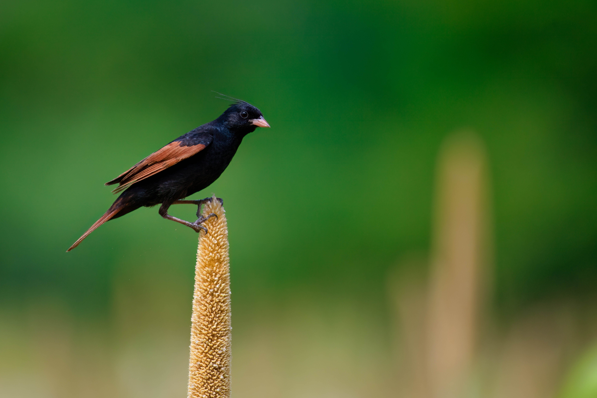

The Crested Bunting is a distinctive Asian bunting with a prominent crest. Breeding males have rich chestnut and black plumage with contrasting markings, while females are duller. It is generally associated with open scrub, grassland, agricultural areas and woodland edges.
Crested Bunting is best separated from Black-headed Bunting by looking at the overall shape and the strongest plumage pattern rather than one small mark. Compared with Black-headed Bunting, it has a different combination of colour, proportions and typical behaviour, which becomes clearer when the whole bird is visible. Grey-necked Bunting can also resemble it in some settings, but differences in bill shape, tail length, wing pattern, posture or habitat can help narrow the identification. Calls and behaviour are useful supporting clues when plumage is difficult to see, especially for birds that spend much of their time in dense vegetation. Using several features together is more reliable than identifying the bird from a single characteristic.
IOC World Bird List v15.2 — taxonomy and nomenclature, IUCN Red List of Threatened Species — global conservation status, BirdLife International — species distribution, ecology and conservation, eBird / Cornell Lab of Ornithology — identification and life-history information